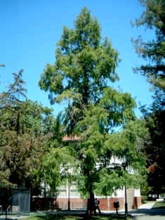
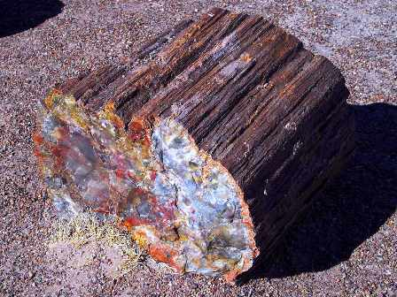
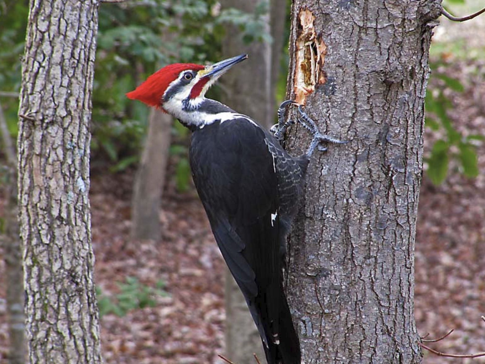
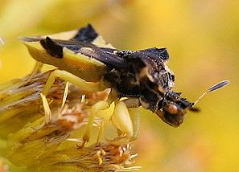
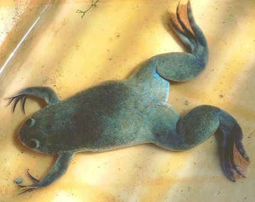
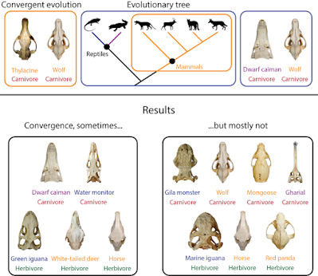

Para famílias
Inscreva seu filho
Cadastre-se como responsável e crie o perfil de sócio pesquisador do seu filho — com apelido público, avatar ilustrado e sua autorização em cada etapa.
Inscrever meu filho →O Clube Criacionista de Ciências é o lugar onde crianças de 9 a 13 anos investigam o mundo com pensamento crítico e a cosmovisão bíblica. Seu filho vira sócio pesquisador, envia as próprias descobertas e troca pontos por recompensas. Um projeto sustentado por doações e pela loja do clube.
Cada visitante chega aqui com um objetivo diferente. Escolha o seu e siga direto para o que interessa.
Cadastre-se como responsável e crie o perfil de sócio pesquisador do seu filho — com apelido público, avatar ilustrado e sua autorização em cada etapa.
Inscrever meu filho →O clube se sustenta com doações e com a loja. Você escolhe entre doação única ou mensal, acompanha onde o dinheiro é aplicado e recebe o comprovante por e-mail.
Quero apoiar →Artigos, estudos científicos, experimentos para fazer em casa e material de apoio para quem conduz a conversa sobre origens com crianças — mais a newsletter que avisa a cada novidade.
Recursos e newsletter →O Programa de Recompensas é o motor do clube: investigar dá pontos, e pontos viram prêmios de verdade na loja.
O responsável faz o cadastro, autoriza a participação e a criança escolhe seu apelido e avatar. O nome real nunca aparece no ambiente do clube.
A cada mês há novas missões. A criança faz o experimento, registra em vídeo, foto ou texto e envia pela área do sócio. A equipe avalia e devolve um retorno.
Descoberta aprovada vira pontos. Os pontos são trocados por livros, kits de experimento e itens exclusivos do clube na loja.
É a oficina principal do clube — o ambiente onde a pergunta vem antes da resposta. Todo mês um tema novo, experiências para fazer em casa e um mural com as descobertas de outros sócios pesquisadores, identificados só pelo apelido.
Sobre o nome: em português existem quatro formas de porquê. A oficina usa a forma separada e sem acento — por que — a que aparece nas perguntas diretas, no sentido de “por qual razão”. É exatamente o jeito insistente com que a criança tenta entender o motivo de tudo que a cerca.
o céu é azul e o pôr do sol é laranja?
Tema: Luz e atmosferaa aranha não gruda na própria teia?
Tema: Design na naturezaalgumas árvores dadas como extintas voltam a florescer?
Tema: Sementes e tempoo pica-pau não fica com dor de cabeça?
Tema: BiomecânicaToda a experiência foi desenhada com um princípio: criança protegida e responsável informado.
No painel do responsável você vê cada descoberta enviada, o extrato de pontos, o histórico de resgates e pode revogar autorizações quando quiser.
Não pedimos RG nem documento da criança. Ela é identificada por um apelido e um avatar ilustrado. O CPF é sempre do responsável.
Cada missão traz o passo a passo, a lista de materiais e um aviso claro sobre o que precisa de supervisão de um adulto.
Uma observação da natureza ligada a um versículo, em dois minutos de leitura.

Não há lugar nas áridas terras do evolucionismo para o altruísmo. Por exemplo, a evolução diz que se eu ajudo você, eu o faço porque vou obter alguma vantagem com isso…
Ler no blog
Isaías 55:8 “Pois meus pensamentos não são os vossos pensamentos nem os meus caminhos os vossos caminhos, diz o Senhor.” De acordo com o…
Ler no blog
I Coríntios 10:4 “… e beberam da mesma fonte espiritual; porque bebiam de uma pedra espiritual que os seguia. E a pedra era Cristo.”…
Ler no blog
I Reis 17:14 “Porque assim diz o Senhor Deus de Israel, a farinha da tua panela não se acabará, e o azeite da tua botija não faltará, até…”
Ler no blog
I Pedro 3:18 “Pois também Cristo morreu uma só vez pelos pecados, o justo pelos injustos para conduzir-vos a Deus; morto, sim, na carne…”
Ler no blog
(Publicado no Clube Criacionista do Facebook em 27/06/12) Efésios 6:14-16 “Estai, pois, firmes cingindo-vos com a verdade e vestindo-vos da…”
Ler no blogAchados recentes lidos com olhar criacionista — sem sensacionalismo e sempre com a fonte à vista.
A forma como os humanos se inspiram na natureza para desenvolver seus inventos é chamada de Biomimética. São muitos os exemplos de como…
Ler notícia
Por Tomi Aalto – 29/06/2023. “Nova pesquisa liderada por cientistas do Milner Centre for Evolution mostra que os dados moleculares e morfológicos…”
Ler notícia“Eu creio no relato bíblico da criação registrado em Gênesis 1 e 2, trazendo a imagem de Deus.” Por Paul Batura. Com…
Ler notíciaTextos mais densos, para pesquisadores, educadores e líderes de ministério. Todos com versão em PDF para download.

A classificação dos animais depende fortemente dos critérios adotados para a mesma. Neste artigo vamos ver como esses critérios mudaram…
Ler artigo
Defensores da teoria da evolução têm argumentado que o surgimento da vida ocorreu ao acaso, por processos naturais, e usam várias…
Ler artigo
O fato de que o sol tem a cor, o tamanho e a distância certos para favorecer a existência de vida na terra, entre outras condições…
Ler artigoSéries e palestras selecionadas sobre Gênesis, origens e o Criador. Clique para assistir sem sair da página.
Michelson Borges
Origens NT
Origens NT
Origens NT
Origens NT
Origens NT
Igreja Presbiteriana Alvorada
Igreja Presbiteriana Alvorada
A nova organização do blog em cinco trilhas — linguagem simples, para a criança e para quem lê com ela.
Fatos surpreendentes da natureza explicados em linguagem de criança.
Passo a passo com materiais simples e orientação de segurança.
Uma série sobre Gênesis 1, um dia de cada vez.
Como conduzir a conversa sobre origens sem travar nas perguntas difíceis.
O que acontece por trás das missões, das validações e dos prêmios.
Tudo o que apoia quem conduz a conversa sobre origens com crianças, reunido em um só lugar — e uma newsletter que avisa você a cada material novo.
Textos densos sobre origens e pensamento crítico, com versão em PDF para imprimir e usar em aula.
Leituras curtas que ligam uma observação da natureza a um versículo — prontas para abrir a aula.
Vídeos curtos para passar em sala ou em casa, com o tema de cada episódio já organizado.
Notícias, curiosidades e análises publicadas ao longo do mês, organizadas por categoria.
Passo a passo, lista de materiais e orientação de segurança para reproduzir cada missão em casa ou em classe. Área a montar junto com a equipe.
O clube não cobra mensalidade das famílias. Ele se sustenta com a loja e com quem decide apoiar. Sua doação paga os kits de experimento, a produção dos vídeos, a manutenção da plataforma e os prêmios do Programa de Recompensas.
Doação única no Pix, cartão ou boleto · Mensal no cartão
Recibo automático por e-mail · Você pode doar anonimamente
Inscreva seu filho como sócio pesquisador ou ajude a manter o clube de pé. Os dois caminhos levam ao mesmo lugar: mais crianças investigando o mundo.